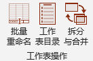
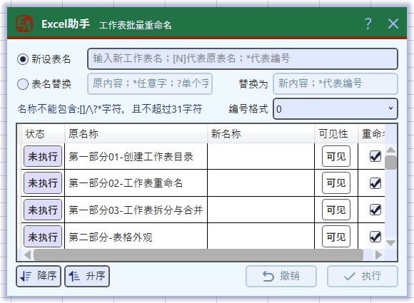
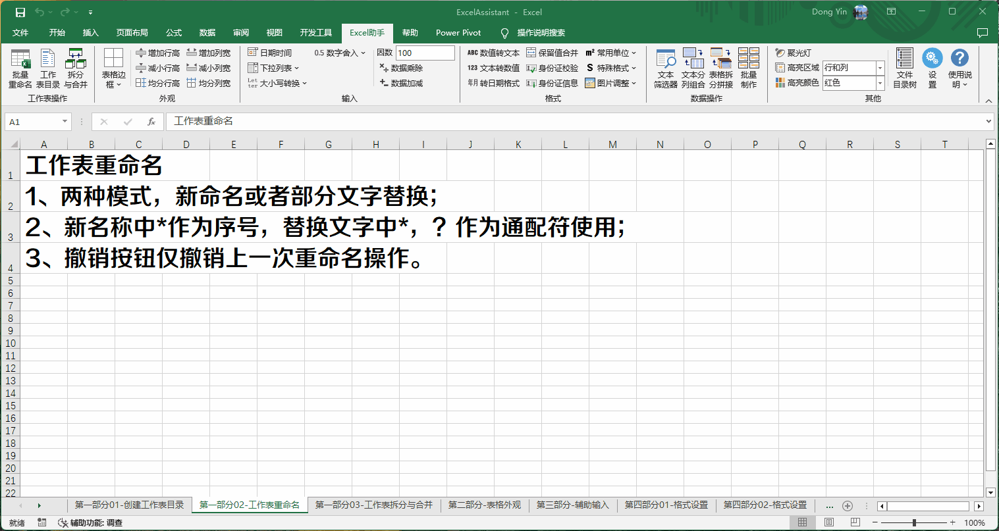
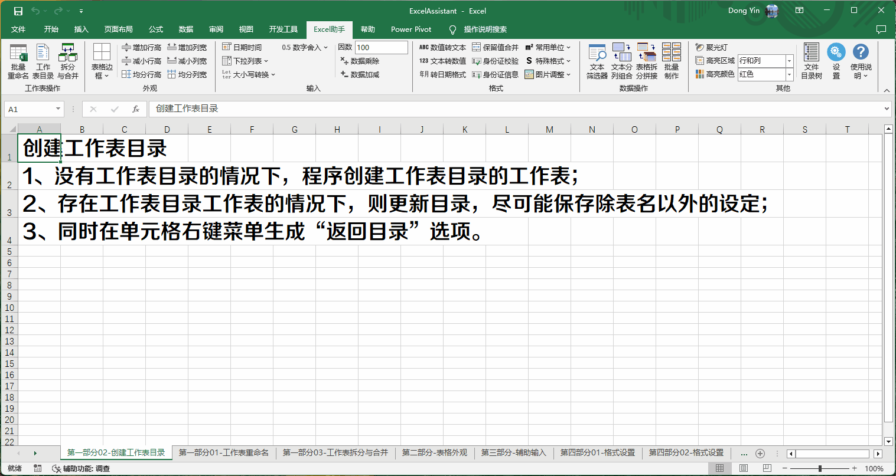
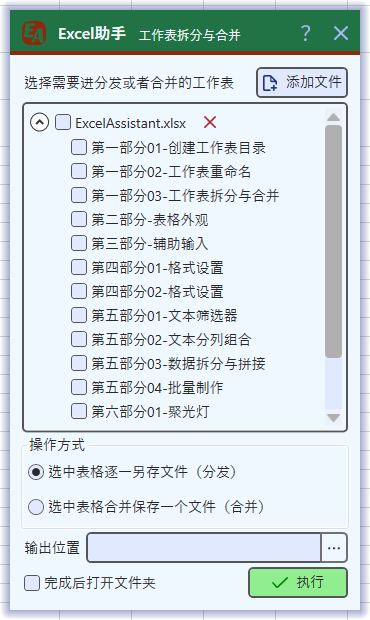

Excel助手Ribbon菜单中工作表操作区域如下：

主要包括如下功能有：批量重命名；工作表目录以及工作表拆分与合并
此功能可为当前工作簿中所有的工作表进行重命名操作，单击工作表操作区域Ribbon按钮批量重命名调用操作界面如下：

重命名操作又分为两种模式进行操作：
模式一，新设表名模式。新表名中[N]表示引用原名称，适用于需要为原表名添加前缀或者后缀的情况。输入*，程序将识别为序号，并根据当前工作表排序和指定的编号格式编号。
模式二表名替换模式。将原表名称中的部分字符进行替换，替换支持*，?作为通配符使用。*匹配任意字符；?匹配单个字符。 替换字符中不再支持引用原表名，但是*仍作为序号使用，规则同模式一。
以上两种模式的输入变化可以在下方列表中实时预览更改后的表名。重命名列可以勾选或者取消勾选，代表当前工作表是否参与重命名。
如果需要对工作表进行排序，通过列表下方的降序、升序按钮进行排序，此时排序不直接对于工作表执行，但是影响重命名中的序号设置，序号总是从上至下依次编号。
使用工作表重命名操作需注意如下事项：
工作表重命名示例：

为本工作簿中所有的工作表（包括隐藏的，但无法通过超链接转到隐藏的工作表）创建一个可链接的目录，存放在本工作簿中一个名为工作表目录的工作表。同时在单元格右键菜单中将创建一个返回目录的选项，通过此选项可返回工作表目录（如存在）。
该功能不包含任何界面，点击工作表操作区Ribbon按钮工作表目录即生成目录。 第一次生成工作表目录或未找到作为目录输出对象的工作表时，程序将用内置设置创建，内置设置较为简单。生成后的工作表目录，用户可根据自己喜好需求进行调整，例如字体样式，行高列宽以及边框颜色等。再次更新工作表目录时，直接点击工作表目录按钮即可更新，程序极大可能保留用户自身的设置，仅对工作表目录区域进行更新。
使用工作表目录需注意如下事项：
创建工作表目录示例：

将选定的工作表（不包括括隐藏的）拆分为单个工作簿，或者合并为一个工作簿。单击工作表操作区域Ribbon按钮拆分与合并即可打开如下界面：

界面开启时，程序自动读入当前Excel打开的所有工作簿的工作表，不包括隐藏的工作表以及本程序生成的特殊表，例如工作表目录。如果工作簿处于未保存状态（指仅创建尚首次保存至存储设备的文档），则将不载入下方列表区域。
如需要额外导入工作簿，通过列表右上方的添加文件按钮，添加Excel工作簿（仅支持xls与xlsx文件），点击工作簿右侧的红色×按钮，将该文件移除列表。勾选工作簿时，将选择该工作簿内所有工作表，取消勾选工作簿时，同样也取消勾选其内所有工作表。
操作类型分为拆分与合并两种，当选择拆分时，所有选中的工作表，均将另存为单独的一个工作簿（Excel文件）；当选择合并时，所有选中的工作表（无论是否在一个工作簿中）均将合并到一个工作簿（Excel）内。
输出位置为拆分的文件或者合并的文件存放的位置，必须指定才能执行操作。
使用拆分合并注意如下事项：
工作表拆分与合并示例：